Fifteen original creatures across five effort tiers. The rat, goblin, and many-eyed stone watcher are the original style anchors; the other twelve were generated to follow their lighting, outline, camera angle, palette, scale, and four-frame strip.
Roster and stable issue assignment rules · Art direction
Each image shows its complete transparent four-frame sheet. The app displays a selected frame at much smaller size.
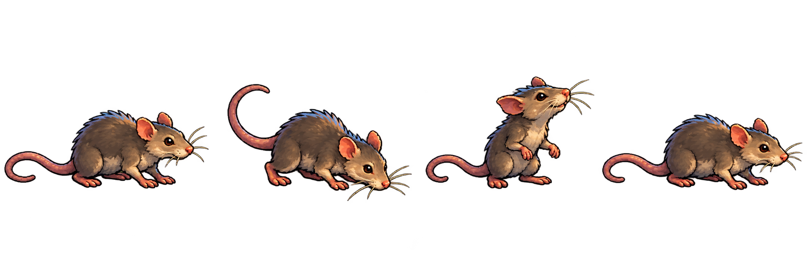
dungeon-rat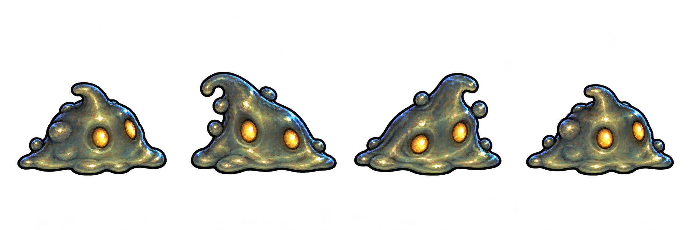
cave-slime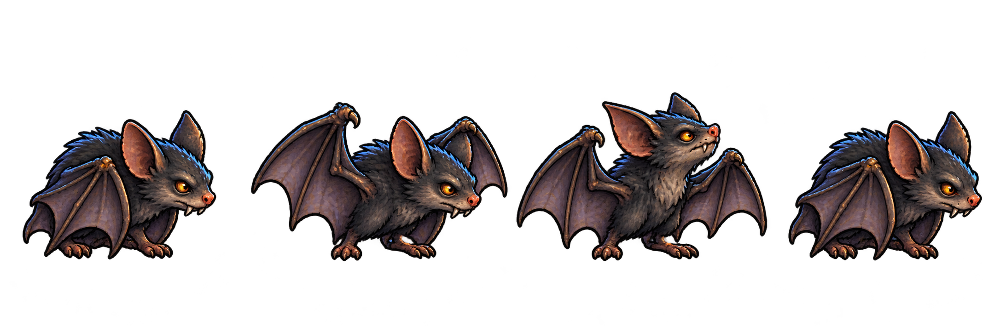
cave-bat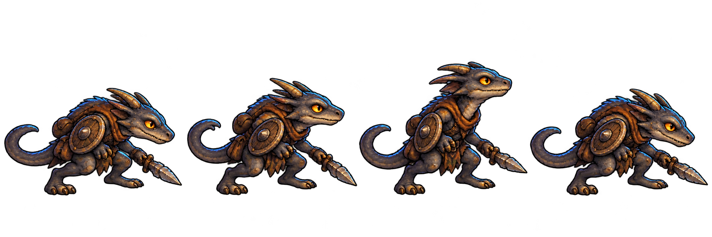
kobold-scout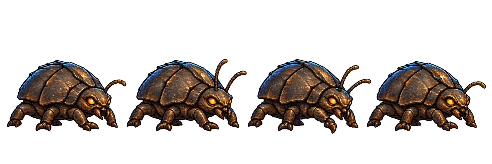
cave-beetle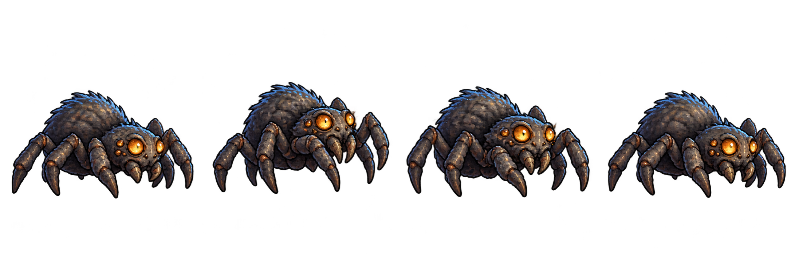
cave-spider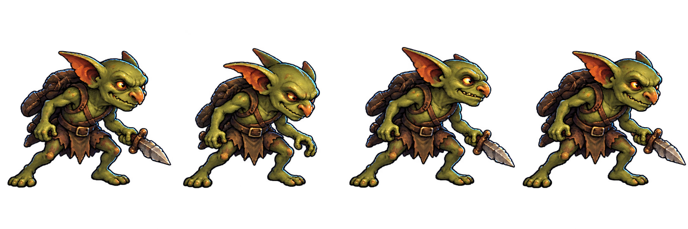
goblin-scout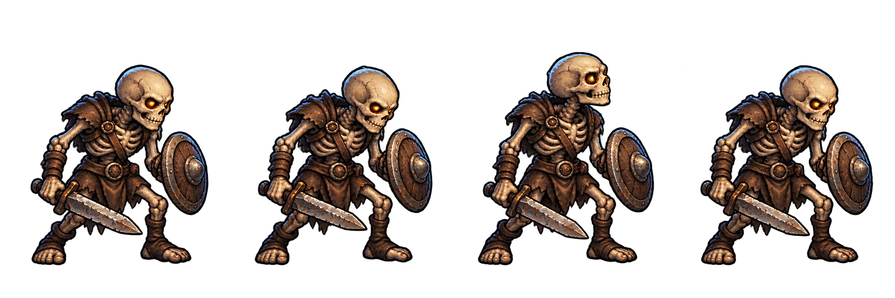
skeleton-guard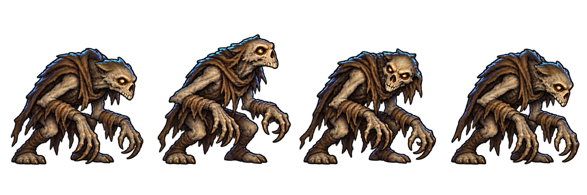
crypt-ghoul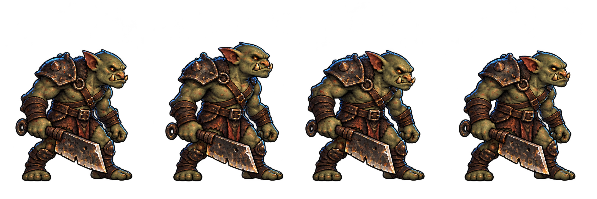
orc-raider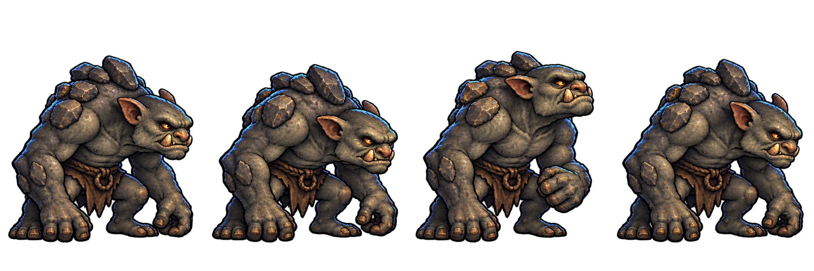
stone-troll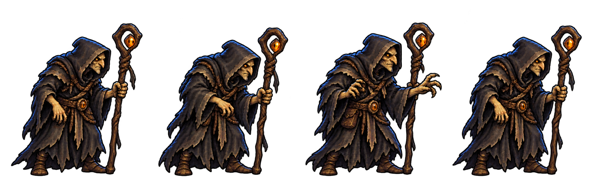
dungeon-warlock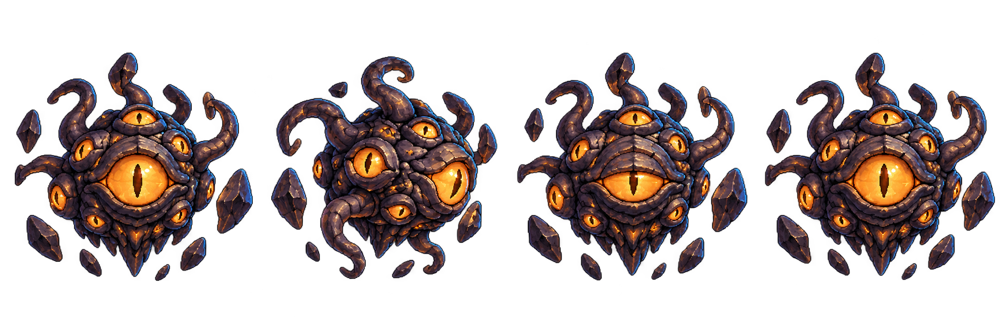
many-eyed-stone-watcher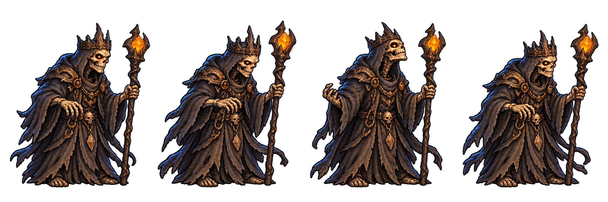
crypt-lich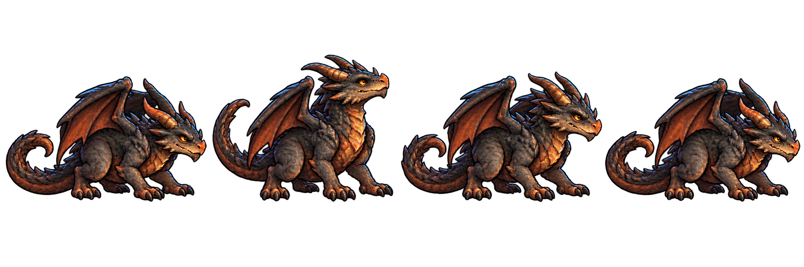
ember-dragon